第八章 向量的数量积与三角恒等变换
注: 如非特殊说明, 以下图片都来自高中数学考点题解公众号
8.1 向量的数量积
8.1.1 向量数量积的概念
1.两个向量的夹角
给定两个非零向量a, b, 在平面内任选一点O, 作$\overrightarrow {OA} = a$, $\overrightarrow {OB} = b$,
则称[0,π]内的∠AOB为向量a与向量b的夹角, 记作<a, b>.
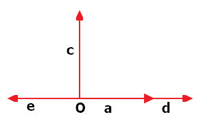
如上图, 向量a与c的夹角为$\pi \over 2$, 即 <a,c>=$\pi \over 2$;
向量a与d的夹角为0, 即<a,d>=0;
向量a与e的夹角为π, 即<a,e>=π.
2.向量数量积的定义
当a与b都是非零向量时, 称 |a||b|cos <a,b> 为向量a与b的数量积(也称为内积),
记作 a·b, 即:
a·b = |a||b|cos<a,b>.
由此可知, 两个非0向量a与b的数量积是一个实数, 这与向量的加法, 减法 以及 数乘向量 的结果任是一个向量不同.
a与b垂直的充要条件 是 他们的数量积=0, 即:
a⊥B ⇔ a.b=0
例1: |a| = 5, |b| = 4, <a, b> = 120°, 求 a.b
解:
a.b = |a|.|b|.cos<a, b> = 20.(-1/2) = -10
⇒cos<a, b> = $a.b \over |a||b|$
3.向量的投影与向量数量积的集合意义
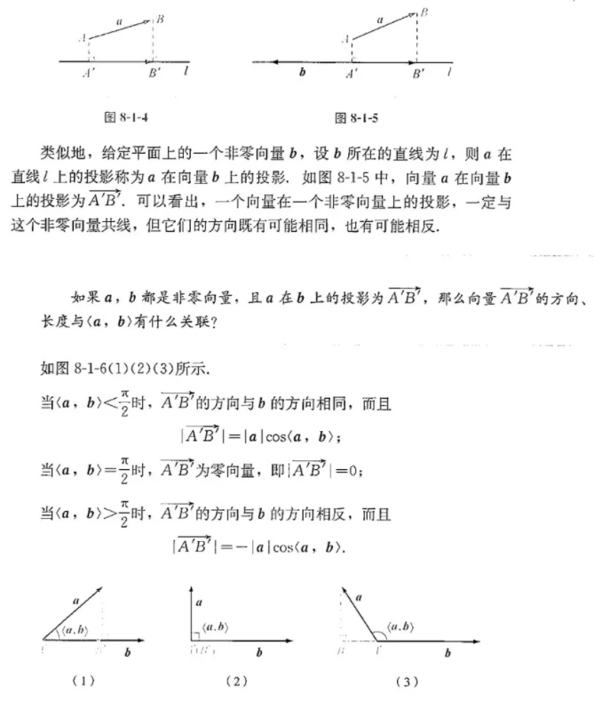
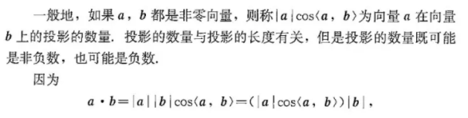
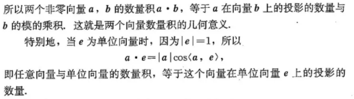
例:
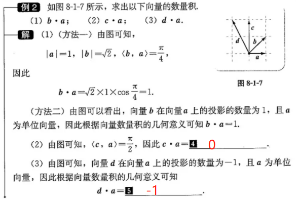
8.1.2 向量数量积的运算律
$a.b = b.a$
$(\lambda a).b = \lambda(a.b)$ (当a,b都是非零向量且λ≠0)
$(a + b) . c =a.c + b.c$ 证明如下:↓
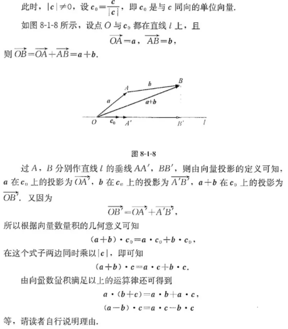
例2, 例3:
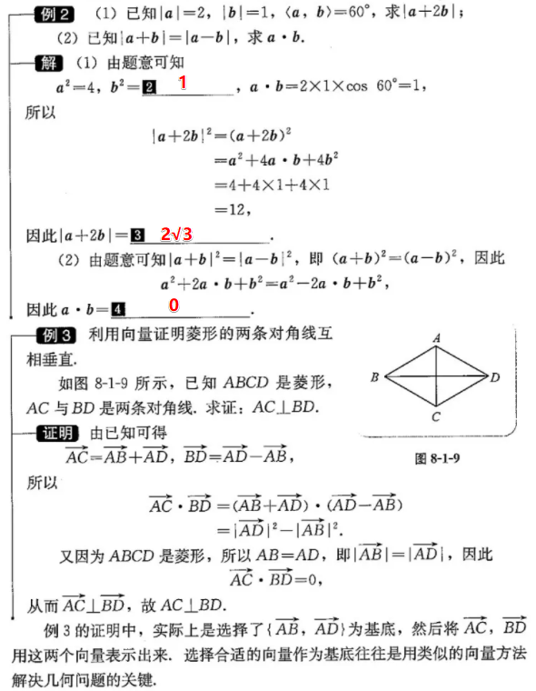
例4:
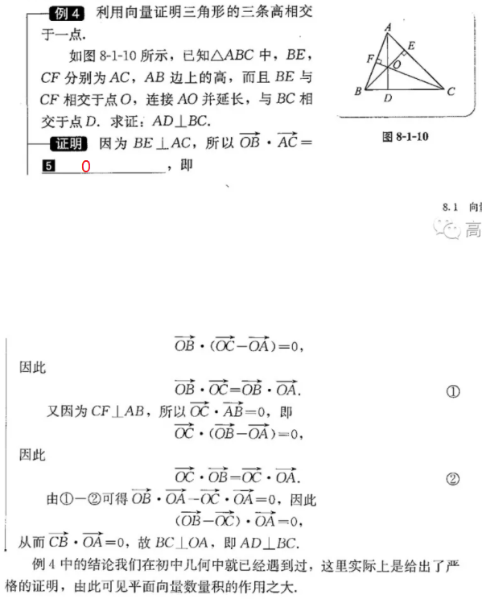
8.1.3 向量数量积的坐标运算
1.向量的坐标与向量的数量积
 $\displaystyle a.b = x_1 x_2 + y_1 y_2$
$\displaystyle a.b = x_1 x_2 + y_1 y_2$
由此可知, 利用向量的坐标可以迅速地算出向量的数量积.
而且, 当a=($x_1, y_1), b = (x_2, y_2)$都不是0向量时, 因为 $|a|^2 = a.a = x_1^2 + y_1^2, |b|^2 = b.b = x_2^2 + y_2^2$,
⇒
cos <a, b> = ${x_1 x_2 + y_1 y_2 \over {\sqrt {x_1^2 + y_1^2} \sqrt {x_2^2 +
y_2^2}}}$
也就是说, 根据向量的坐标, 还能方便地算出他们的
模 以及
夹角 等.
在平面直角坐标系中，如果$A(x_1，y_1), B(x_2, y_2)$, 则$\overrightarrow {AB} = (x_2 - x_1, y_2 - y_1)$,
从而$\overrightarrow {AB} . \overrightarrow {AB} = (x_2 - x_1)^2 + (y_2 - y_1)^2$, 因此
$|\overrightarrow {AB}| = \sqrt {(x_2 - x_1)^2 + (y_2 - y_1)^2}$.
这就是说, 利用向量的数量积, 同样可以方便地得出平面直角坐标系中两点之间的距离公式.
2.用向量的坐标表示两个向量垂直的条件
 后面还有一些内容没整理...
后面还有一些内容没整理...
8.2 三角恒等变换
8.2.1 两角和与差的余弦
$cos(\alpha - \beta) = cos \alpha \ cos \beta + sin \alpha \ sin \beta$
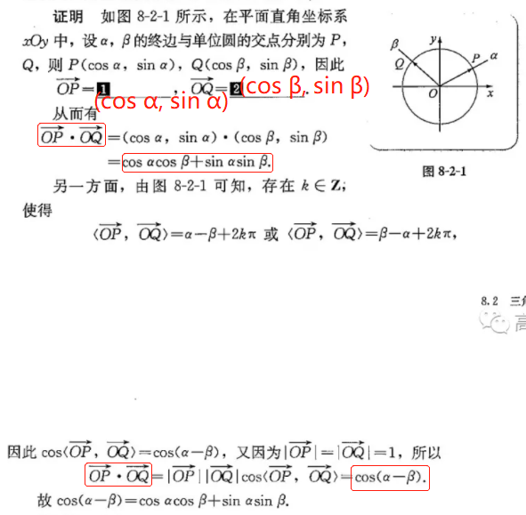
$cos(\alpha + \beta) = cos \alpha \ cos \beta - sin \alpha \ sin \beta$
证明:
cos(α + β) = cos(α - (-β))
= cosα.cos(-β) + sinα.sin(-β)
= cosα.cosβ - sinα.sinβ
8.2.2 两角和与差的正弦、正切
1.两角和与差的正弦
$sin(α + β) = sin α \ cosβ + cosα \ sinβ$
$sin(α - β) = sin α \ cosβ - cosα \ sinβ$
证明:
sin(α + β) = cos(($\pi \over 2$ - α) - β)
= cos($\pi \over 2$ - α)cosβ + sin($\pi \over 2$ - α)sinβ
=sinα cosβ + cosα sinβ
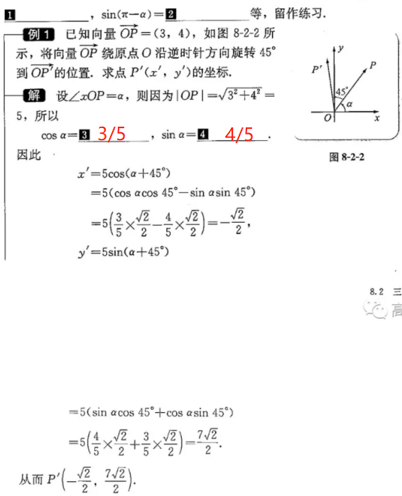
$asin x + bcos x = A \ sin(x + ϕ)$
$A = \sqrt {a^2 + b^2}$
$cos \phi = {a \over A}, sin \phi = {b \over A}$(φ>0左移, <0右移)
下图1是 $y = 1.sin x + 1.cos x$ 的函数, 右侧最高点(${\pi \over 4}, \sqrt 2$):

例:
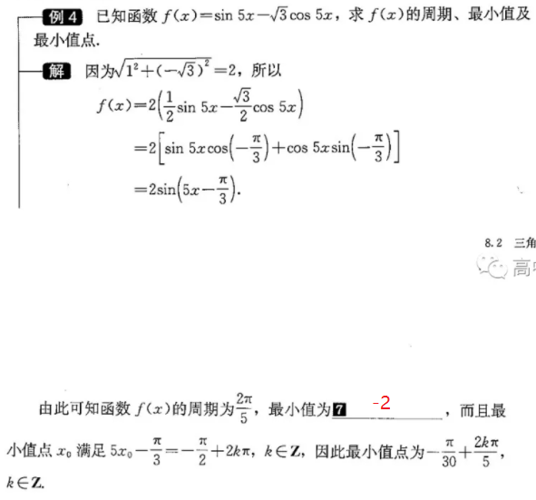
2.两角和与差的正切
tan(α + β) = $sin(α + β) \over cos(α + β)$
= $sinα \ cosβ + cosα \ sinβ \over {cosα \ cosβ - sinα \ sinβ}$ 分子分母同时除以cosα cosβ
= $tan α + tan β \over 1 - tan α \ tan β$
⇒ tan(α - β) = $tan α - tan β \over 1 + tan α \ tan β$
8.2.3 倍角公式
sin 2α = 2sinα cosα
cos 2α = $cos^2 α - sin^2 α$
tan 2α = $2 \ tan α \over 1 - tan^2 α$
cos 2α = $1 - 2sin^2 α$(∵$sin^2 α + cos^2 α = 1$)
cos 2α = $2cos^2 α - 1$
cos 2α = $1 - tan^2 α \over {1 + tan^2 α}$(见书最后例)
8.2.4 三角恒等变换的应用
半角公式(下方4个):
$sin^2 {\alpha \over 2} = {{1 - cos \alpha} \over 2}$
$cos^2 {\alpha \over 2} = {{1 + cos \alpha} \over 2}$
$tan^2 {\alpha \over 2} = {{1 - cos \alpha} \over {1 + cos \alpha}}$
$tan {\alpha \over 2} = {sin \alpha \over {1 + cos \alpha}} = {{1 - cos \alpha} \over sin
\alpha}$
积化和差公式(下方4个):
由 $cos(\alpha + \beta)$ 和 $cos(\alpha - \beta)$ 两边分别相加和相减得到:
$cos \alpha cos \beta = {1 \over 2}[cos(\alpha + \beta) + cos(\alpha - \beta)]$
$sin \alpha sin \beta = - {1 \over 2}[cos(\alpha + \beta) - cos(\alpha - \beta)]$
由 $sin(\alpha + \beta)$ 和 $sin(\alpha - \beta)$ 两边分别相加和相减得到:
$sin \alpha cos \beta = {1 \over 2}[sin(\alpha + \beta) + sin(\alpha - \beta)]$
$cos \alpha sin \beta = {1 \over 2}[sin(\alpha + \beta) - sin(\alpha - \beta)]$
和差化积公式(下方4个):
$cos \alpha + cos \beta = 2 cos{\alpha + \beta \over 2} cos{\alpha - \beta \over
2}$
$cos \alpha - cos \beta = -2 sin{\alpha + \beta \over 2} sin{\alpha - \beta \over
2}$
$sin \alpha + sin \beta = 2 sin{\alpha + \beta \over 2} cos{\alpha - \beta \over
2}$
$sin \alpha - sin \beta = 2 cos{\alpha + \beta \over 2} sin{\alpha - \beta \over
2}$
★★★★★本章总结★★★★★
参考资料: 一个视频让你学会推导出所有常用三角函数公式：二倍角公式、降幂公式、半角公式、万能公式、积化和差公式、和差化积公式_哔哩哔哩_bilibili, 感谢up主的无私付出!
万能公式的作用:
三角恒等变换, 附件:
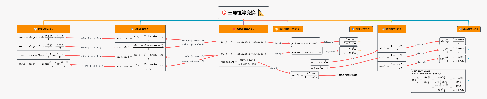
拓展阅读:
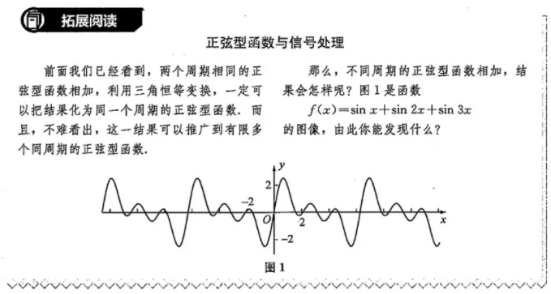